2026 외식 소비 핵심 트렌드 '한그릇 오리지널리티' 브랜드 선언. 한 그릇의 새로운 기준으로 외식업의 패러다임을 바꿉니다.
후루룩찹찹은 바쁜 현대인들에게 단순히 대충 때우는 식사가 아닌 온전하고 고품격의 한 끼를 선사하기 위해 탄생했습니다. 맛있는 한 끼, 든든한 한 끼, 행복한 한 끼를 매일 식탁 위에 실현하여 고객의 매일을 긍정적이고 풍요롭게 변화시키는 것을 지향합니다.
기존 분식의 한계를 타파하고 프리미엄 단품 요리 시장의 공백을 정밀하게 타격합니다. 전문 다이닝 수준의 맛을 보장하면서도 빠르고 합리적인 소비 패턴을 충족시키는 신개념 외식 패러다임을 제안합니다.
전문점 대표 메뉴를 한 곳에서. 고객이 여러 전문 카테고리 매장을 번거롭게 찾아다닐 필요가 없도록 전 세계적으로 대중성이 완벽히 검증된 한그릇 요리들만 정교하게 큐레이션했습니다.
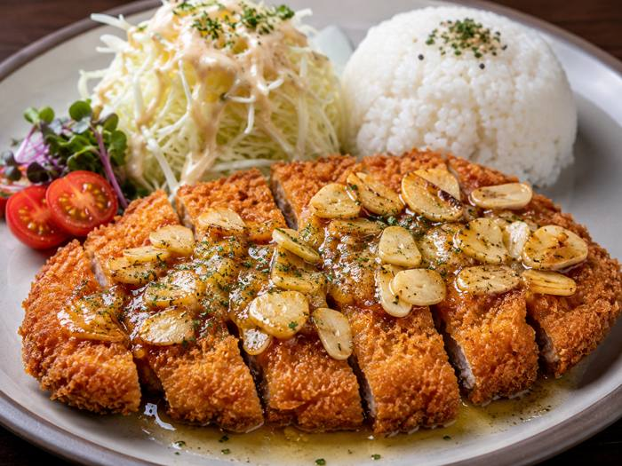
| 카테고리 구분 | 전체 대표 메뉴 구성 | 핵심 특장점 요약 |
|---|---|---|
| 시그니처 덮밥류 | 직화 우삼겹 덮밥, 돼지불백 덮밥, 된장 삼겹살 덮밥, 중화식 해물덮밥, 고추장 항정살 덮밥 등 | 초고화력 직화 테크닉으로 원초적 풍미와 육즙 밀착 |
| 월드 누들 (쌀국수) | 우삼겹 쌀국수, 왕다리 쌀국수, 차슈 쌀국수 | 전통 동남아 육수 공정에 기초한 깊고 맑은 맛 |
| 이탈리안 스파게티 | 라구 스파게티, 우삼겹 라구 스파게티, 소시지 라구 스파게티 등 | 다진 고기가 듬뿍 들어간 자체 수제형 풍성한 소스 설계 |
| 스페셜 & 트렌디 | 갈릭버터 돈까스, 마라탕, 우삼겹 라면 | 핵심 유입 고객층인 MZ 세대 맞춤형 다채로운 단품 리스트 |
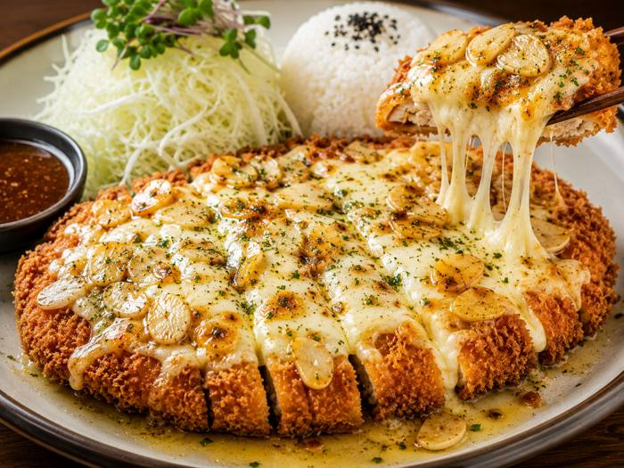
갈릭버터치즈돈까스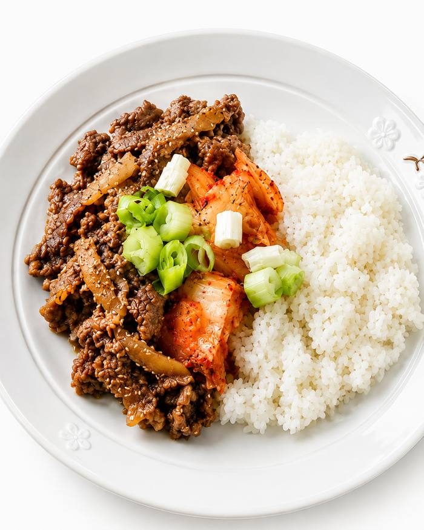
김치불고기덮밥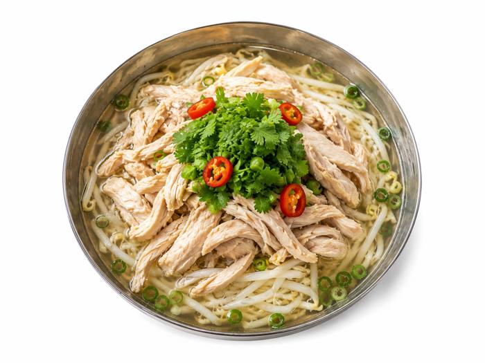
닭고기쌀국수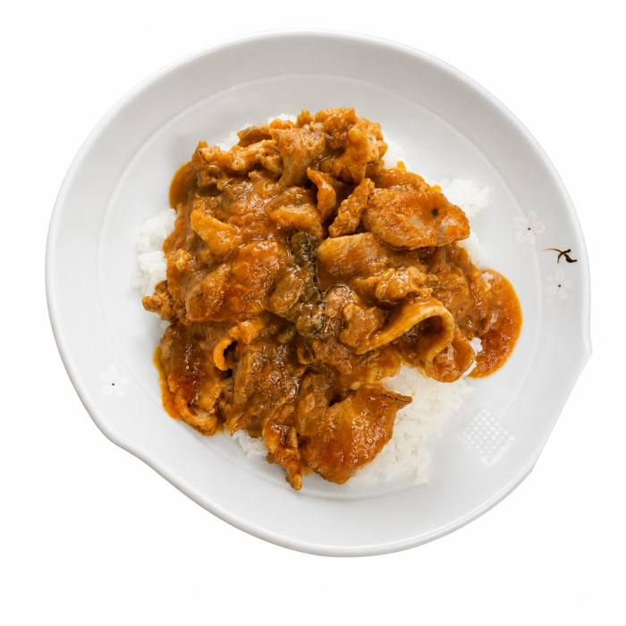
돼지고기카레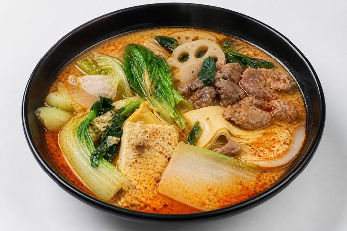
마라탕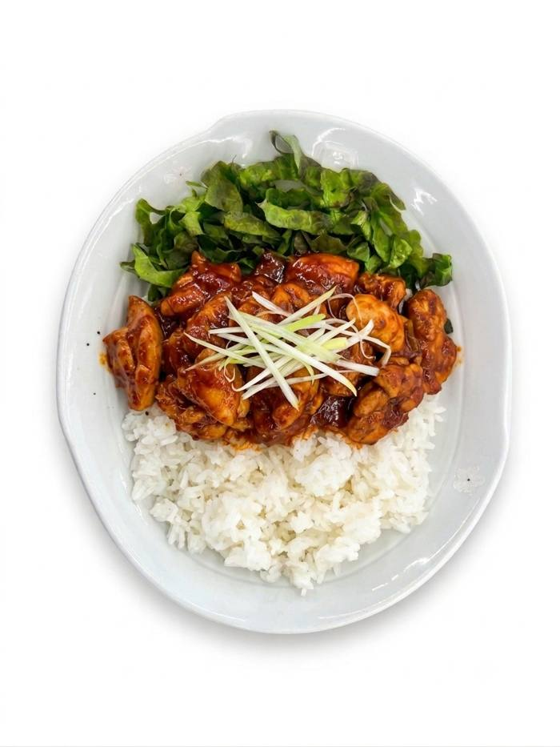
매운닭고기덮밥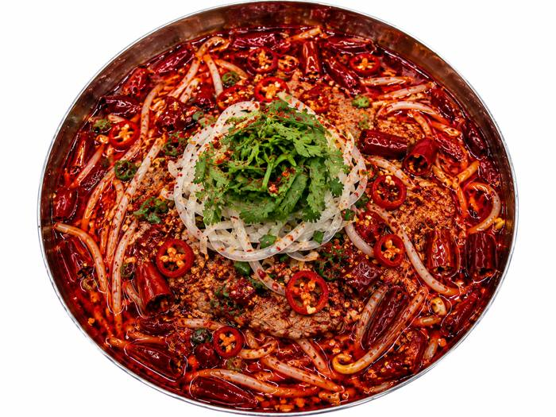
매운쌀국수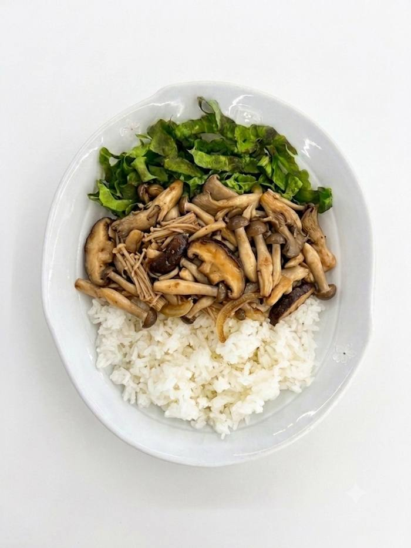
모듬버섯덮밥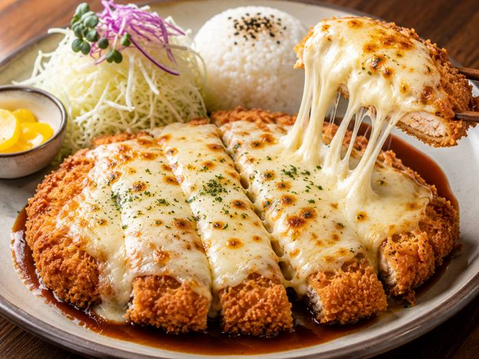
모짜렐라폭포돈까스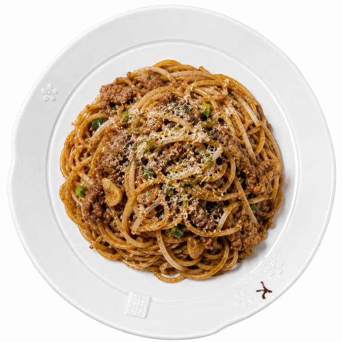
볶음파스타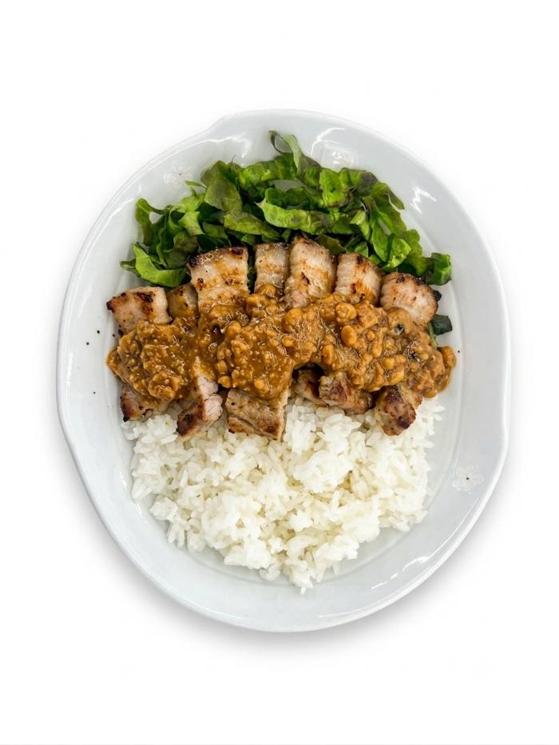
삼겹된장덮밥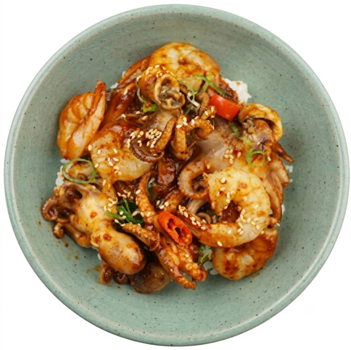
중화식해물덮밥동일 자원으로 단품 가치를 극대화하여 기존 대비 40% 이상 향상된 강력한 매출 및 마진 설계 메커니즘을 창출합니다.
조리 동선 및 전처리 프로세스를 극대화하여 점주 본인 포함 단 2~3인 미만의 스태프로 피크타임 테이블 회전을 완전히 해결합니다.
원격 및 본사 오프라인 단기 밀착형 교육(3일 내 완성)을 완비하여 주방 경험이 전무한 초보 경영주라도 첫날부터 일정한 특급 맛을 발현합니다.
수익성과 혼밥 유입이 완전하게 검증된 오피스 타운, 대학가, 초대형 몰/백화점 인포멀 푸드코트, 터미널 배후 지역을 중점 타깃합니다.
외식업 성공의 새로운 지평, 후루룩찹찹이 그 미래를 선도하겠습니다.
가맹 및 입점 제안 파트너십 문의 : info@hururukchapchap.com | 02-1234-5678